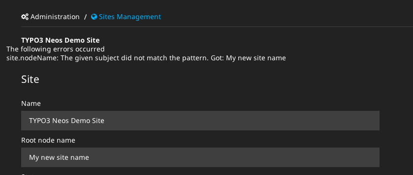

Bug #53330
Renaming site root node throws Exception
| Status: | Resolved | Start date: | 2013-11-05 | |
|---|---|---|---|---|
| Priority: | Should have | Due date: | ||
| Assigned To: | Bastian Waidelich | % Done: | 100% |
|
| Category: | - | |||
| Target version: | - |
Description
When you try to rename the site root node in the sites administration you will get an Exception:
#1364290748: Invalid node name "My new site name" (a node name must only contain characters, numbers and the "-" sign).
Reason for this is that the site name is used for the new node name instead of the node name.
Additinally it would be nicer when the user gets a validation error and no Exception when he uses an invalid node name.
{kind=link}
Associated revisions
[BUGFIX] Correctly rename site root nodes
When renaming the ``site root node`` via the Sites management module
the site name was incorrectly used for setting the new root node name
instead of the specified node name.
This change fixes this by mapping the new node name only to the site
when it has been changed.
Besides this cleans up SiteController, Site and the Edit form.
Fixes: #53330
Releases: 1.0, master
Change-Id: I34d0e88efb2880897eaabd292852d4770bc22626
Reviewed-on: https://review.typo3.org/25168
Tested-by: Bastian Waidelich
Reviewed-by: Jacob Floyd
Reviewed-by: Andreas Wolf
Tested-by: Andreas Wolf
Reviewed-by: Christian Mueller
Reviewed-by: Bastian Waidelich
[BUGFIX] Correctly rename site root nodes
When renaming the ``site root node`` via the Sites management module
the site name was incorrectly used for setting the new root node name
instead of the specified node name.
This change fixes this by mapping the new node name only to the site
when it has been changed.
Besides this cleans up SiteController, Site and the Edit form.
Fixes: #53330
Releases: 1.0, master
Change-Id: I34d0e88efb2880897eaabd292852d4770bc22626
Reviewed-on: https://review.typo3.org/26345
Reviewed-by: Bastian Waidelich
Tested-by: Bastian Waidelich
History
#1 Updated by Gerrit Code Review over 1 year ago
- Status changed from New to Under Review
Patch set 1 for branch master of project Packages/TYPO3.Neos has been pushed to the review server.
It is available at https://review.typo3.org/25168
#2 Updated by Hubertus Golf over 1 year ago
I have the same problem with launchr.com
http://v0107966a.launchr.com/@user-admin.html
An error occurred while trying to call TYPO3\Neos\Controller\Frontend\NodeController->showAction(). Error for node: Could not convert array to Node object because the node "/sites/neosdemotypo3org/home" does not exist.
#3 Updated by Gerrit Code Review over 1 year ago
Patch set 2 for branch master of project Packages/TYPO3.Neos has been pushed to the review server.
It is available at https://review.typo3.org/25168
#4 Updated by Bastian Waidelich over 1 year ago
- File Sites_Management.png added
- Status changed from Under Review to Needs Feedback
- Assigned To set to Bastian Waidelich
Hi Alexander,
can you please confirm that this issue still occurs to you in Neos 1.0?
I just tried to reproduce this, but I get a validation error as expected:

(The error message needs some styling apparently)
#5 Updated by Alexander Stehlik over 1 year ago
Did you try it with a valid node name? This is when the error occurs.
#6 Updated by Alexander Stehlik over 1 year ago
Sorry, forgot to mention that the error also occurs in the current master.
Thanks for testing :)
#7 Updated by Bastian Waidelich over 1 year ago
- Status changed from Needs Feedback to Accepted
Alexander Stehlik wrote:
Did you try it with a valid node name? This is when the error occurs.
Ah good point, I didn't try that ;)
Thanks for reporting, I'll take care of this asap!
#8 Updated by Gerrit Code Review over 1 year ago
- Status changed from Accepted to Under Review
Patch set 3 for branch master of project Packages/TYPO3.Neos has been pushed to the review server.
It is available at https://review.typo3.org/25168
#9 Updated by Gerrit Code Review over 1 year ago
Patch set 1 for branch 1.0 of project Packages/TYPO3.Neos has been pushed to the review server.
It is available at https://review.typo3.org/26345
#10 Updated by Gerrit Code Review over 1 year ago
Patch set 4 for branch master of project Packages/TYPO3.Neos has been pushed to the review server.
It is available at https://review.typo3.org/25168
#11 Updated by Gerrit Code Review over 1 year ago
Patch set 2 for branch 1.0 of project Packages/TYPO3.Neos has been pushed to the review server.
It is available at https://review.typo3.org/26345
#12 Updated by Gerrit Code Review over 1 year ago
Patch set 3 for branch 1.0 of project Packages/TYPO3.Neos has been pushed to the review server.
It is available at https://review.typo3.org/26345
#13 Updated by Gerrit Code Review over 1 year ago
Patch set 5 for branch master of project Packages/TYPO3.Neos has been pushed to the review server.
It is available at https://review.typo3.org/25168
#14 Updated by Alexander Stehlik over 1 year ago
- Status changed from Under Review to Resolved
- % Done changed from 0 to 100
Applied in changeset 1562addba4d9786c43d62c9522a73f7130527ce5.
#15 Updated by Gerrit Code Review over 1 year ago
- Status changed from Resolved to Under Review
Patch set 4 for branch 1.0 of project Packages/TYPO3.Neos has been pushed to the review server.
It is available at https://review.typo3.org/26345
#16 Updated by Bastian Waidelich over 1 year ago
- Status changed from Under Review to Resolved